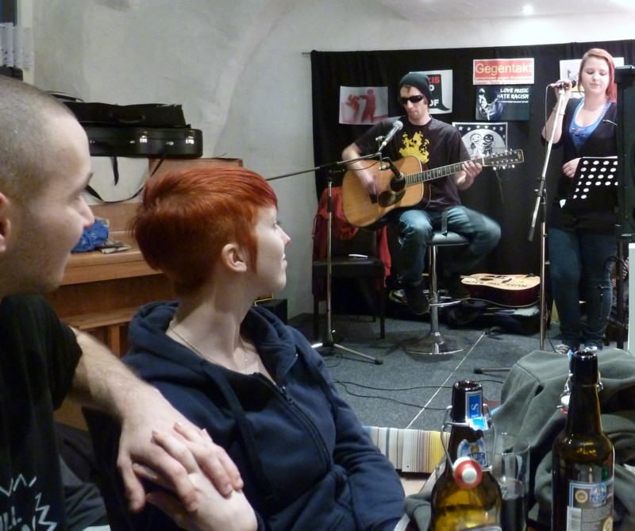

Aufgrund von Schwierigkeiten mit dem Betreiber der kurzen URL http://kommunal.tk kann diese ab 2013 nicht mehr benutzt werden. Sinnvoll ist es, schon jetzt auf http://kommunal.blogsport.de umzusteigen; diese eigentliche URL ist auch erheblich stabiler und hat fast keine Ausfälle.
Archiv für April 2012
zugegangener Terminhinweis
Filmvorführung
Zum 67. Jahrestag der Befreiung vom Faschismus
(mehr…)
zugesandter Terminhinweis
Maikundgebung des DGB in Aschaffenburg
Aufstellung: 10:00 Uhr, Linde Werk 1, Schweinheimer Straße
Demonstration: 10:15 Uhr mit der „March Mellows Street Band“
Kundgebung: 11:00 Uhr, Theaterplatz, Rathaus
Es spricht: Martin Burkert, Geschäftsführendes Vorstandsmitglied der EVG
Nach redaktionsinterner Diskussion müssen wir festhalten,
-> dass wir in letzter Zeit von wichtigen Informationen offensichtlich abgeschnitten waren. Wie unsereins schon vor längerer Zeit vermutet hatte, müsste die Redaktion nicht außerhalb, sondern mitten in Aschaffenburg sitzen, um den Anspruch, Nachrichten aus der Region zu bringen, auch befriedigend umsetzen zu können. (mehr…)
Es ist nicht üblich, einen Kommentar auf einen kommunal.tk-Beitrag besonders hervorzuheben. Wir haben das getan, als Nazis uns ganz besonders dumm und gewaltandrohend beschimpft haben. Und wir tun es jetzt, wo wir besonders nett gelobt werden. (mehr…)
Stefan Reis, Kulturchef des Main-Echo, erfreut doch immer mal wieder die geneigte Leserschaft dieser regionalen Tageszeitung – und noch mehr uns. (mehr…)
„Und in der Halbzeit heißt es: `Jetzt ist Pause, Pause ist jetzt.´ Dann dürfen die jüngsten Fernsehzuschauer Pipi machen“, schrieb Der Spiegel am 6. Juli 1970 zu einer Kindersendung. Das wäre heute undenkbar. Pause. Mitten im Werbefernsehzusatzprogramm.
Ja, der alte Sack aus unserer Redaktion erinnert sich wirklich noch. Und wird jetzt erstmal Pause machen. Jetzt ist Pause, Pause ist jetzt. Bis dann.
Knapp einem Monat vor dem Edelweißpiratenfestival in AB möchten wir mit diesem Clip einer dort auftretenden Band für das Fest werben: (mehr…)
Ein Beitrag zur Diskussion von Manfred M. Krug
(Der Name des Autors wird im Dokument falsch angegeben.)
Bereits 1998 erschien in Asyl am Untermain (Aschaffenburg-Miltenberg) und danach in der nhz (Hanau) die Buchbesprechung zu „23 Jahre – die Karriere des Propheten Muhammad“ von Ali Dashti. Da diese Besprechung derzeit im Internet sonst nicht auffindbar ist, wird sie hier als Beitrag zur Diskussion um (antiislamischen) Rassismus, Religion und Geschichte gebracht (PDF).
Gerade eben kam die Info herein, dass KBF Revolte (das Elektropunk-Projekt aus dem Raum Miltenberg) erfolgreich in Michelstadt aufgetreten ist, was wir gerne dokumentieren, zumal ein Clip von Mapec vorliegt:
Wir haben es mehrfach betont: Die Hausband von kommunal.tk ist KBF Revolte; und unsere favorisierten Liedermacher sind Yohazid und Reinhard Frankl. Wir widmen diesen beiden heute jeweils einen Beitrag zur Diskussion:
Yohazid
Reinhard Frankl
Ein Beitrag zur Diskussion von Mapec
„front: europa“ hieß die erste CD, die der damals 19jährige Johannes Giesemann beim Label tonträger & Tontraeger TONTRäger (t&TT) im April 2002 vorlegte. Im gleichen Jahr noch setzte er mit der völlig selbstproduzierten CD „Sonnenwind“ nach. Konnte bei „front:europa“ noch gefragt werden, ob dieser Giesemann vielleicht politisch links steht, so wurde dies bei der zweiten Scheibe endgültig klar: Giesemann ist ein Linker, der das Persönliche öffentlich macht, weil auch das Privateste politisch ist; und den das Öffentliche auch höchst privat, weil emotional betrifft.
(mehr…)
Ein Beitrag zur Diskussion von Reinhard Frankl
Reinhard Frankl hat bei der Demonstration gegen das Nazifest in Ansbach bei Marktheidenfeld am 13. August 2011 nicht nur gesprochen, sondern auch zwei Lieder gesungen. Sein Redemanuskript (einschließlich der Liedtexte) hat er uns nun zur Verfügung gestellt. Wir bedanken uns und empfehlen ausdrücklich die Lektüre dieses Textes.
Songs von ihm finden sich auch immer in der Songwerkstatt von Attac Aschaffenburg-Miltenberg, worauf hiermit ausdrücklich hingewiesen sei.
Editorische Anmerkung: Dieser Beitrag erschien 2011 (in kürzerer Fassung) bei disk.blogsport.de und wurde nach Einstellung dieser Seit auf kommunal.tk übernommen und erweitert.
Da in diesem Jahr keine Ostermarschaktionen in Aschaffenburg und Umgebung stattfinden, sei auf den Odenwälder Ostermarsch in Erbach/Michelstadt hingewiesen, zu dem auch die Antifa Odenwald einlädt. Es gibt eine Demonstration, Ansprachen, Essen und Trinken, Infostände und Musik von KBF Revolte.
In mehreren Teilen beschäftigte sich in den letzten Jahren die nhz – linke Zeitschrift für die Region (erscheint in Hanau) mit den Auswirkungen der kapitalistischen Stadtentwicklungspolitik, hier konkret am Beispiel der Umgestaltung von Hanaus Innenstadt. Interessant: Die Notwendigkeit der Umgestaltung wird auch mit der „Abwanderung von Kaufkraft ins Umland oder in `konkurrierende´ Städte (hier: Aschaffenburg, Fulda, Offenbach, Frankfurt)“ begründet.
Während also Hanau wegen z.B. Aschaffenburg ein gigantischen Einkaufszentrum in die Innenstadt setzen will, ist es gerade Aschaffenburg, das am Hauptbahnhof und nochmal jenseits der Gleise ebenfalls neue und großzügige Verkaufs- und Serviceflächen ansiedelt. Wer soll diese ganzen Angebote mit seiner Kaufkraft befriedigen? Werden die einheimischen Millionäre jetzt täglich zehn Brote pro Person essen, zwanzig Deo-Sprays verbrauchen, zwölft Zeitungen und dreißig Bücher lesen, stündlich zum Friseur und täglich zehnmal zu McDonalds gehen? Oder bekommen die Arbeitslosengeld-II-Empfänger jetzt grenzenlos Kredit ohne Rückzahlung, damit sie einkaufen, einkaufen und einkaufen können? – Wir sehen: Dem stetig unter dem Konkurrenzdruck der Städte ausgeweiteten Angebot stehen keinerlei realen Konsummöglichkeiten gegenüber.
Zuerst wird es wohl die kleineren Städte treffen, die bereits mangels innerstädtischer Einkaufsmöglichkeiten veröden; dies wird sich unter dem Konkurrenzdruck von Hanau, Aschaffenburg etc. fortsetzen und verschärfen. Dann sind auch diese größeren Städte selbst dran, die langfristig mit großem Leerstand ihrer Einkaufstempel rechnen müssen.
Die Beiträge aus der nhz stellen wir hier online zur Verfügung, da wir die darin gemachten Aussagen und Erkenntnisse für wichtig und übertragbar halten. Wir danken der Redaktion nhz für die Erlaubnis, die Texte bringen zu dürfen.
Redaktion kommunal.tk
Teil 1: Umbau der Innenstadt durch private Investoren
Teil 2: Zwänge und Abwege kommunaler Strukturpolitik
Teil 3: Stadtentwicklung jenseits der Vernunftgrenze
Kapitale Fehler bei der Stadtentwicklung – zum Beispiel Hanau, Teil 3
Freiheitsplatz-Verkauf und Kapitalverwertung:
Wenn die Geringverdiener aus der Innenstadt vertrieben sind, ziehen die Investoren weiter
Ein Beitrag zur Diskussion von Christine Kessler, 16. März 2011, aus: nhz Nr. 145
Seit Herbst 2009 haben wir uns in der nhz immer wieder mit dem riesenhaft dimensionierten Umbau der Hanauer Innenstadt beschäftigt, der bis zum 25. Mai als Bieterverfahren unter dem Namen »Wettbewerblicher Dialog« lief. Der Lübecker Investor HBB darf nun als »Sieger« dieses Verfahrens im nächsten Jahr (2012) mit Baumaßnahmen am Freiheitsplatz beginnen, die das Leben, das Klima und den Verkehr in der Innenstadt für die nächsten Jahre schwer belasten werden.
(mehr…)
Kapitale Fehler bei der Stadtentwicklung – zum Beispiel Hanau, Teil 2
Ein Beitrag zur Diskussion von Peter Born, 22. August 2010, aus: nhz Nr. 143
Inzwischen ist der »Wettbewerbliche Dialog« (WeDi) als Bieterverfahren abgeschlossen. Am 25. Mai entschied der Magistrat, dem Lübecker Investor HBB den Zuschlag für den Umbau der Hanauer Innenstadt zu erteilen; die Stadtverordnetenversammlung stimmte dem am 31. Mai mit überwältigender Mehrheit zu. Inzwischen ist klargestellt, dass HBB nicht im vollen ursprünglich geplanten Umfang investieren, sondern sich auf das Einkaufscenter am Freiheitsplatz konzentrieren will.
(mehr…)
Kapitale Fehler bei der Stadtentwicklung – zum Beispiel Hanau, Teil 1
»Bürgerbeteiligung« ja, Bürgerentscheid nein
Wer bestimmt die Hanauer Kommunalpolitik?
Ein Beitrag zur Diskussion von Peter Born, 7. August 2009, aus: nhz Nr. 140
In Hanau ist man sich seit Jahrzehnten weitgehend einig in der Feststellung, dass diese Stadt – besonders ihr Kernbereich von der Altstadt über den Freiheits- und den Marktplatz bis zur Französischen Allee – ziemlich unansehnlich für BewohnerInnen und BesucherInnen ist. Damit hörte aber die Gemeinsamkeit schon fast auf.
(mehr…)
Da waren sie mal alle zusammen beim GEGENTAKT, die Lieblingsmusiker der Redaktion kommunal.tk: KBF Revolte (unplugged mit MC MörderBeat und Jana; MC HeiZkesseL im Publikum, siehe auf dem Foto vorne links), Yohazid (mit Mapec) und Reinhard Frankl. Zum Abend steht bei Mapec etwas. Wir bringen hier drei Fotos:

KBF Revolte unplugged
(mehr…)